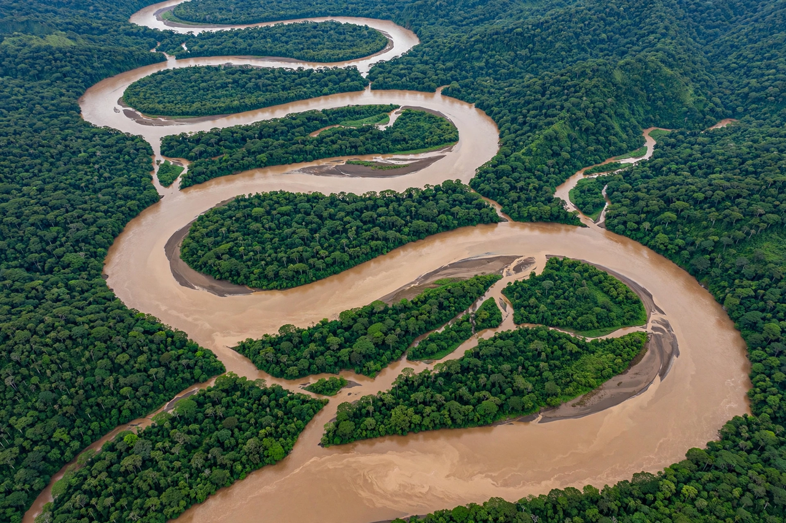

| Madeira River | |
|---|---|
| Native name | Rio Madeira (Portuguese) |
| Countries | Bolivia, Brazil |
| Length | 3,250 km (2,020 mi) approx. |
| Source | Confluence of the Madre de Dios and Mamoré rivers, Bolivia |
| Mouth | Amazon River, near Itacoatiara, Brazil |
| Basin size | 1,420,000 km² (548,000 sq mi) |
| Discharge | Average ~31,200 m³/s |

The Madeira River (Portuguese: Rio Madeira) is a major waterway in South America. It is estimated to be 1,450 km (900 mi) in length, while the Madeira-Mamoré is estimated to be near 3,250 km (2,020 mi) in total length, depending on the measuring party and their methods. The Madeira is the biggest tributary of the Amazon River, accounting for about 15% of the water in the basin. It drains an area of roughly 1.42 million square kilometres across Bolivia, Brazil and Peru.
The Madeira proper begins at the confluence of the Madre de Dios and Mamoré rivers on the Bolivia–Brazil border. From there it flows northeast, forming the border between the two countries for about 100 km, then enters Brazil in the state of Rondônia. Below the mouth of the Abunã River the river passes a long series of rapids and falls — historically an obstacle to navigation — near the city of Porto Velho. Downstream it flows through the states of Rondônia and Amazonas before joining the Amazon east of Manaus, near Itacoatiara.
The Madeira's great tributaries include the Mamoré, Madre de Dios, Beni, Aripuanã, Ji-Paraná (Machado), Jamari and Marmelos rivers. The Beni and Mamoré join to form the upper Madeira system, and together with the Madre de Dios they carry enormous sediment loads from the Andes, giving the river its muddy, "whitewater" character. The river takes its name — Madeira, Portuguese for "wood" — from the great quantities of driftwood and fallen trees it once carried downstream.
The basin straddles the western Amazon rainforest and the seasonally flooded forests known as várzea. Rainfall varies sharply across the basin: the Andean headwaters receive snowmelt and heavy orographic rain, while the Bolivian lowlands have a marked dry season. The Madeira is one of the most fish-rich rivers on Earth, home to well over 1,000 described species, including the Amazon river dolphin (boto) and giant migratory catfish such as the dourada, whose spawning migration from the Amazon estuary to the upper Madeira is among the longest freshwater fish migrations known.
The rapids between Porto Velho and Guajará-Mirim long blocked through navigation, prompting construction of the Madeira-Mamoré Railway (1907–1912), a notorious project built to carry rubber around the falls. In the 21st century Brazil built two large hydroelectric dams on this reach — Santo Antônio (2011) and Jirau (2013) — which submerged the rapids and enabled locks and a continuous waterway, while drawing criticism for impacts on fisheries and river communities. The Madeira waterway is a major export corridor for soybeans and grain from Brazil's centre-west.
Indigenous peoples including the Mura, Munduruku and Parintintin have lived along the river for centuries. Portuguese expeditions ascended the Madeira in the 18th century seeking gold and slaves, and the river became a route between the Amazon and the mining districts of Mato Grosso. During the rubber boom of the late 19th and early 20th centuries the valley's seringais (rubber estates) made it briefly one of the world's most valuable — and brutal — extractive frontiers.